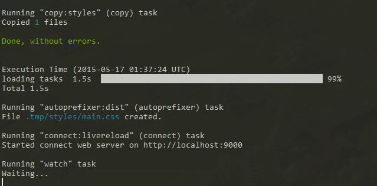
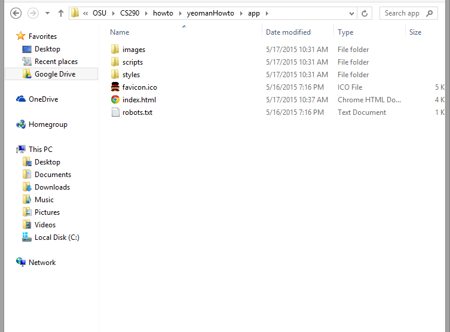

Exploring the Files
Digging into all our new beautiful files
With the process finished, let’s check out our new website! From cmd, type
grunt serve
This will launch our website in your preferred browser.
Grunt Serve also gives a great update log for each time it has to update the virtual server:
Sure, this is great and all. But, what exactly did we make? Locate the folder where you specified installation. Yeoman stores the guts of your website in the /app/ folder.
Your javascript file will be located in:
/apps/scripts/
Your css file is located in:
/apps/styles/
Next, let’s open up that index.html.
There’s a lot going on in there and it’s all been done for us thanks to yeoman! Without going in too deep on bootstrap, the design elements of the site are largely handed by bootstrap. Do you remember earlier, when you installed that live reload functionality for your browser? Now is the time to put it into practice. Let’s first change that ‘Allo, Allo!’
to “Good Afternoon!”
But that’s not the only thing we can change on the fly. Open main.css and let’s add a background-color to that large text box in the middle, called a "jumbrotron".
If you don't like the coloring, then that's okay! It's really easy to change it back. With
bootstrap being the default, if you delete your changes from the css, it will default to
that original fresh design.
Next, we'll take a look on how to modify the content on our new page.